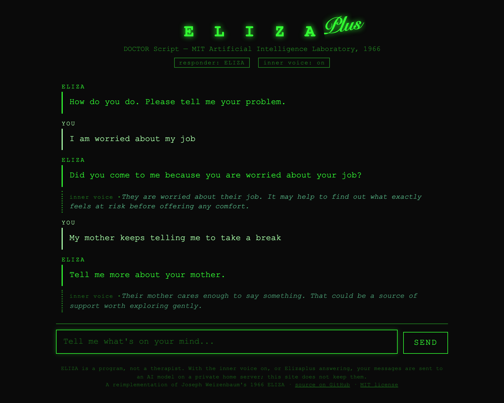
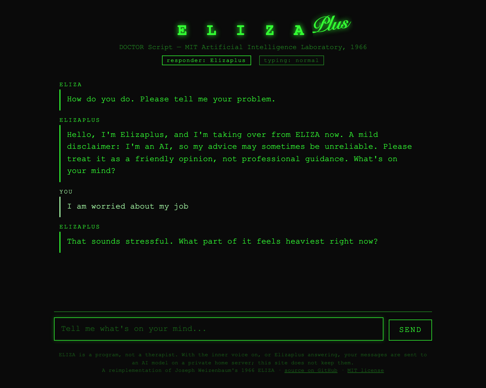
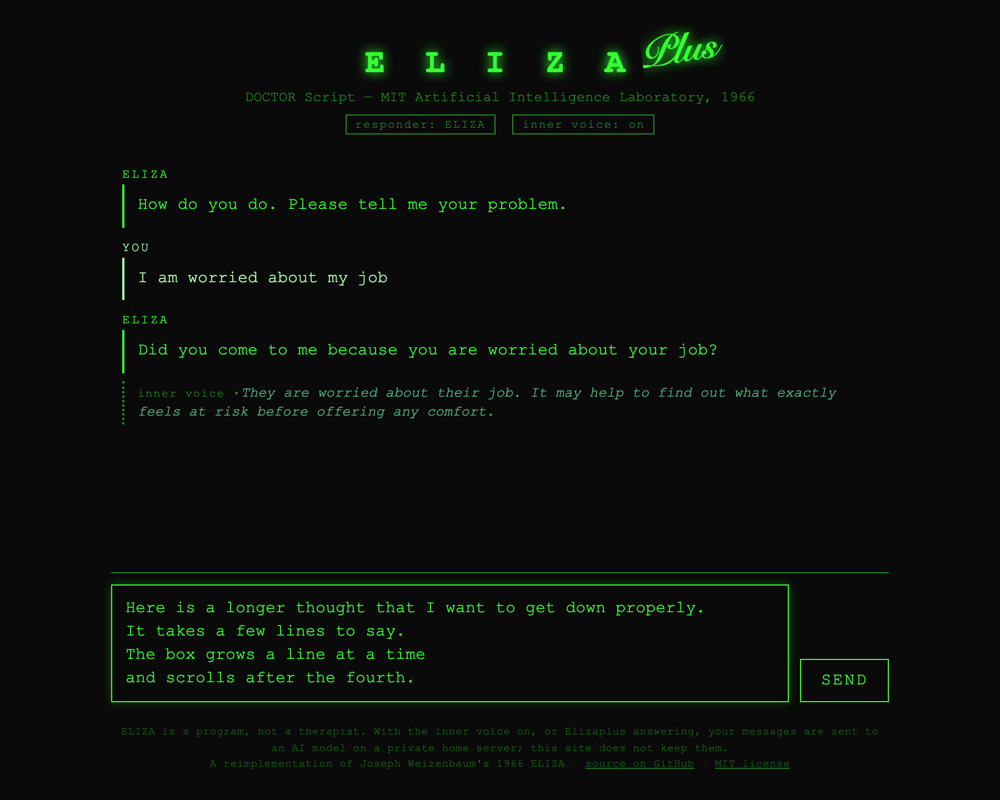
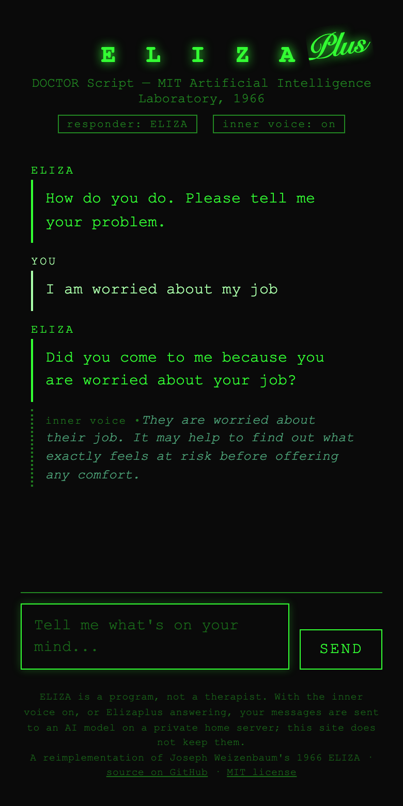

ELIZAPlus
A 1966 chatbot with a modern inner voice
ELIZA was a famous 1966 program that talked like a therapist by rephrasing what you said. elizaplus keeps the classic rules and adds two things a local AI model can do: a private “inner voice” that shows what a thoughtful listener might be thinking, and an optional switch that lets the AI answer instead of the old rules.
1. Classic mode
The original DOCTOR rules, typed out at a human pace.
2. Inner voice
Thoughts appear under each exchange. The inner voice is always on at the start and never changes the reply.

3. Elizaplus replies
One switch hands the answers to a local AI model. Words about self-harm get a fixed, safe reply with the 988 number.

Made to type in
The input box grows a line at a time as you write, up to four lines, then scrolls inside. It works on a phone too.


Honest notes
- It is a hobby project and an experiment: not therapy, not advice.
- It runs on a private home server. The AI model runs locally, not in a cloud service.
- Conversations are not saved on the server.
The screenshots above show sample conversations written for this page.
Access
Invite-only for now. If you have an account, log in. Everyone else: the code is free (MIT license) and runs anywhere, so you can run your own copy from GitHub.